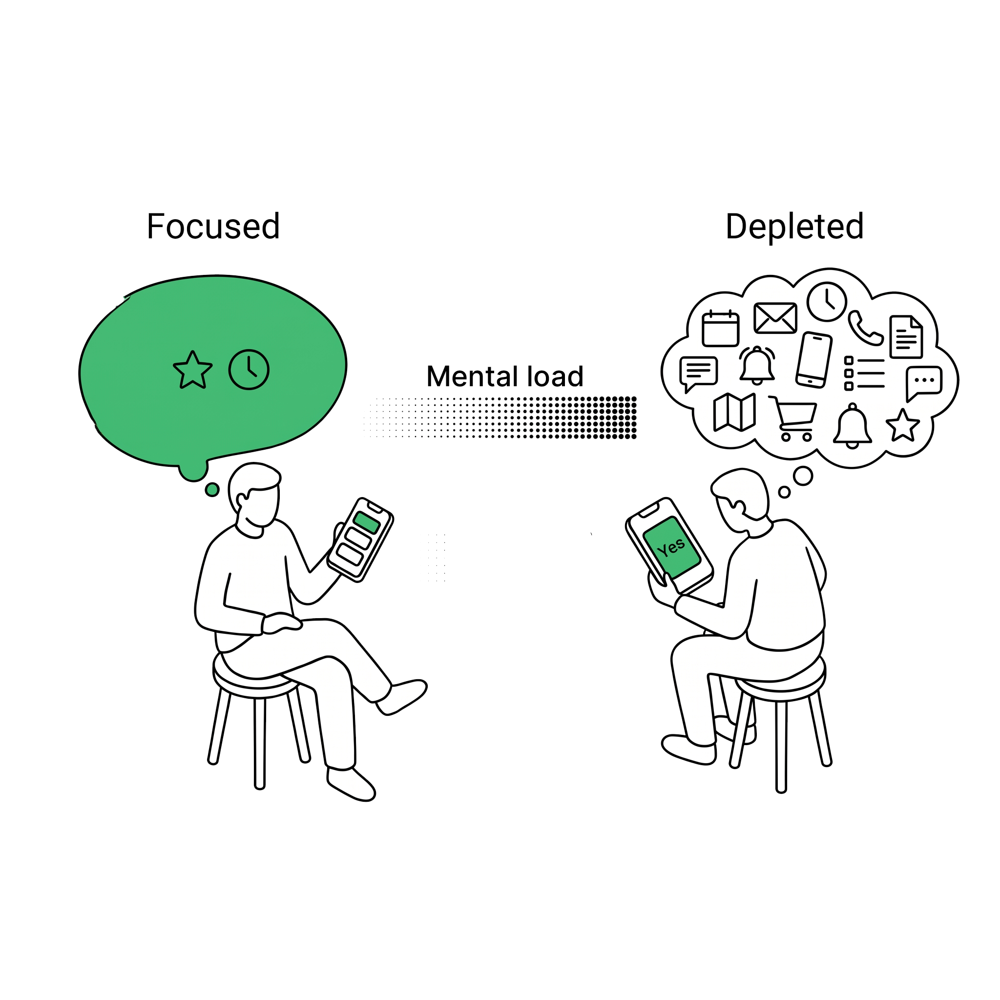
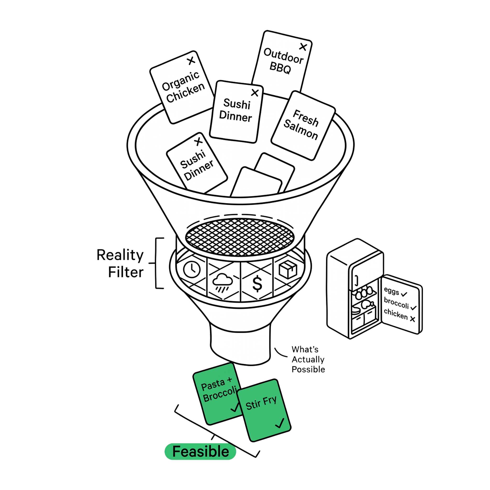
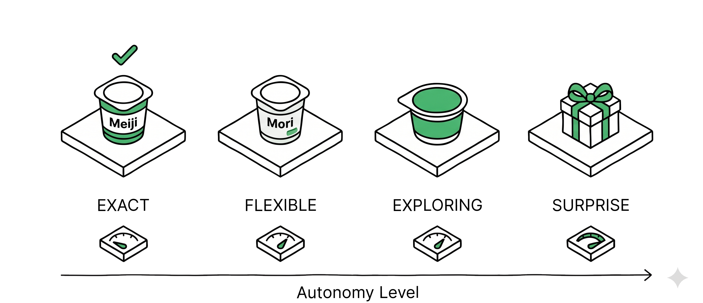
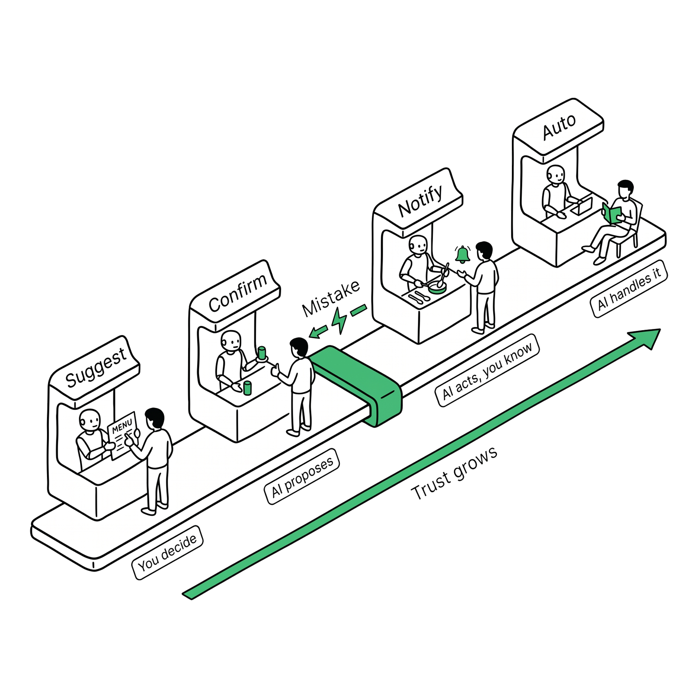
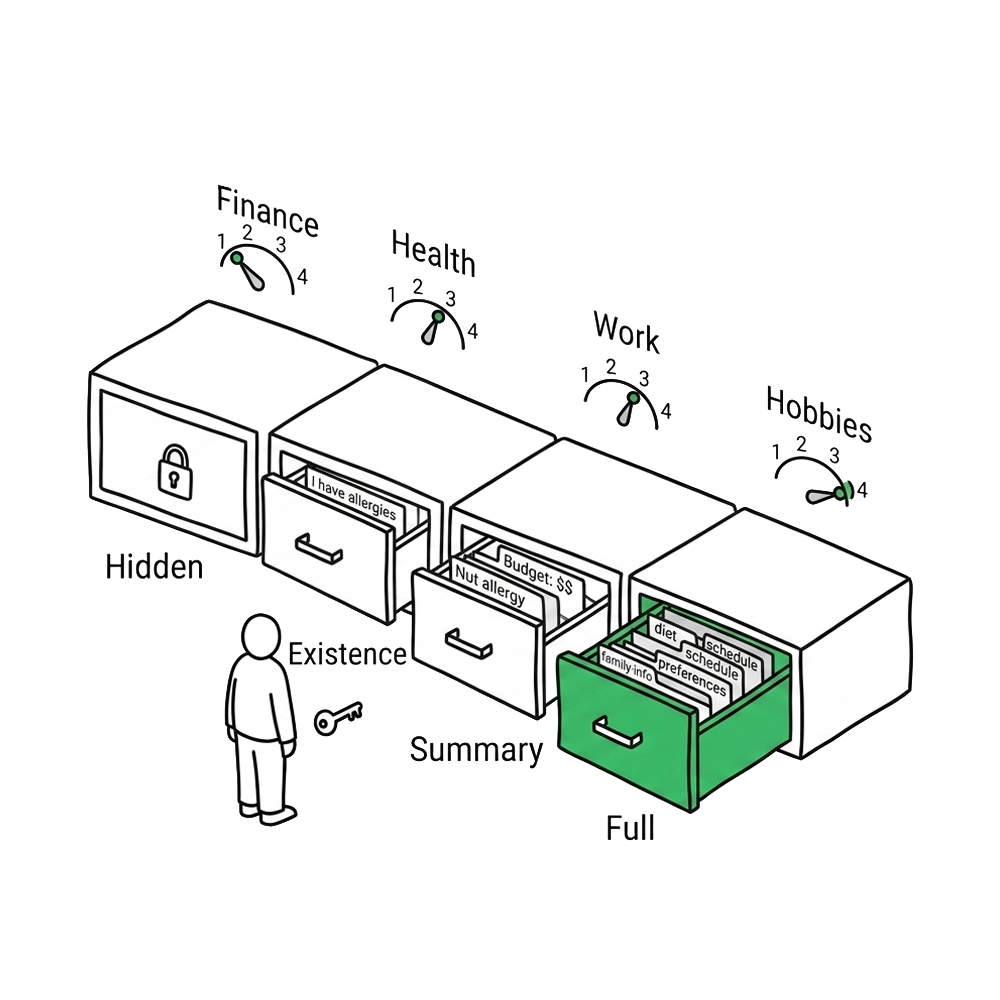

Context Grammar — Floor 2
Grammar
Eight measurable dimensions of human state. The vocabulary AI needs to read the room before it speaks.

Context Grammar — Floor 2
Eight measurable dimensions of human state. The vocabulary AI needs to read the room before it speaks.
A great waiter doesn't just take orders. They notice you're rushing. They see your boss is at the table. They remember you were here last Tuesday. They adjust everything — tone, timing, recommendations — without being asked.
AI today is the waiter who recites the daily specials to someone crying at the table.
It knows what you asked for. It has no idea what's happening around you. Context Tokens fix that. They give AI 8 dimensions to read the room — six that describe your situation, two that control the relationship.
Context Tokens
Situation Tokens
What's happening now — signals AI reads
Relationship Dials
How far AI can act — controls the relationship
Six inputs — raw signals AI reads. Two controls — dials that govern what AI knows about you and how far it can act for you.
The first six of the 8 Context Tokens. They describe the world around the user — inputs AI reads, not settings the user controls.


Cognitive Load is the most speculative token. There is no direct measurement today. Context Grammar uses it as an estimation layer, not a certainty. Design decisions based on this token should always include graceful fallbacks.


Priority Weight has two layers: current urgency (this token) and learned tradeoff patterns (stored in the Brain). The token captures what's pressing right now. The Brain remembers how you've resolved similar collisions before.


You asked for Meiji Bulgarian yogurt, but the store is out. What should AI do? The answer depends on your Substitution Mode — a preference that works hand-in-hand with the Autonomy Dial.

Medications, allergies, specific brand loyalty.
Most grocery items, routine purchases.
When the user is open to discovery, low-stakes items.
Gifts, food exploration, when the user explicitly enables it.
Substitution Mode connects to the Autonomy Dial: you can't be in Surprise mode with low autonomy. The more you trust AI, the more creative it can be with alternatives. But the reverse is also true — if AI suggests a terrible substitute, trust drops, and the mode resets to Exact.
Situation Tokens describe what's happening. Relationship Dials control what AI is allowed to do about it. They're not sensors — they're boundaries.

The Autonomy Dial is not purely user-controlled. Services set defaults, AI adjusts based on track record, and the user makes the final call — the full three-force model lives in Trust Design.

Disclosure is the prerequisite for Autonomy. You cannot say "don't tell AI anything about me" and also expect "but handle everything automatically." That combination is logically dangerous. The Disclosure Dial must open before the Autonomy Dial can advance.
These two dials are the vocabulary. How they couple in real trust relationships — why Disclosure must enable Autonomy, how Dynamic Friction caps delegation, how trust recovers from breaches — is the subject of Trust Design →
Eight tokens. One engine. Infinite combinations. Here's how they connect.
No token works alone. A rushing user, low bandwidth, business dinner, watch — a fundamentally different experience than the same person, relaxed at home, on a TV. Same person. Same AI. Different grammar.
Context Tokens describe the moment. The Brain remembers who you are across moments. Together, they give AI judgment — not just reaction.